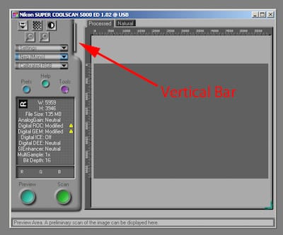

Nikon CoolScan V ED
TWIMC
- Лучшая программа для сканирования —
VueScanNikonScan. - Последняя версия — 4.0.3, выпущена в конце нулевых и для запуска потребуется Windows Vista. Потанцевав с бубном можно стартануть под W7/64bit и вроде даже W10 (гуглите).
- У меня макбук, поэтому запустил винду в виртуалке. Раньше их раздавали бесплатно вместе с IE, а теперь там остались только W7/10, пришлось искать на торрентах. Вообще, купил бы, но не продают ведь.
- Под маком у меня в VirtialBox сканер определился, но NikonScan его не увидел, шаманил-шаманил — ни в какую. Поставил VMware Fusion — и все сразу заработало.
- При выходе из Fusion у многих слетает bluetooth, починить это можно удалив Bluetooth PAN из сетевых настроек мака, по крайней мере, мне помогло. Вообще же, надо попробовать Parallels.
- Если вам так повезло и ваш адаптер поддерживает пакетную обработку кадров, то вот где она спрятана в интерфейсе NikonScan'а (картинка из интернетов):
